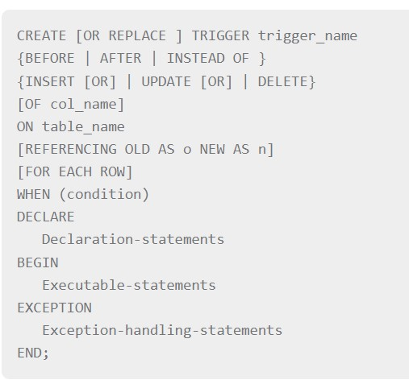

A cursor is a pointer to this context area. PL/SQL controls the context area through a cursor. A cursor
holds the rows
(one or more) returned by a SQL statement. The set of rows the cursor holds is referred to as the active
set.
You can name a cursor so that it could be referred to in a program to fetch and process the rows returned by
the SQL statement, one at a time.
There are two types of cursors -
1.Implicit cursors
2.Explicit cursors
Implicit Cursors
Implicit cursors are automatically created by Oracle whenever an SQL statement is executed, when there is no
explicit cursor
for the statement. Programmers cannot control the implicit cursors and the information in it.Whenever a DML
statement
(INSERT, UPDATE and DELETE) is issued, an implicit cursor is associated with this statement. For INSERT
operations, the cursor holds the data that needs
to be inserted. For UPDATE and DELETE operations, the cursor identifies the rows that would be affected.
In PL/SQL, you can refer to the most recent implicit cursor as the SQL cursor, which always has attributes
such as %FOUND, %ISOPEN, %NOTFOUND, and %ROWCOUNT.
The SQL cursor has additional attributes, %BULK_ROWCOUNT and %BULK_EXCEPTIONS, designed for use with the
FORALL statement.
The following table provides the description of the most used attributes -
1.%FOUND: Returns TRUE if an INSERT, UPDATE, or DELETE statement affected one or more rows or a
SELECT INTO statement returned one or more rows. Otherwise, it returns FALSE.
2.%NOTFOUND: The logical opposite of %FOUND. It returns TRUE if an INSERT, UPDATE, or DELETE
statement
affected no rows, or a SELECT INTO statement returned no rows. Otherwise, it returns FALSE.
3.%ISOPEN:Always returns FALSE for implicit cursors,because Oracle closes the SQL cursor
automatically after executing its associated SQL statement.
4.%ROWCOUNT:Returns the number of rows affected by an INSERT, UPDATE, or DELETE statement, or
returned by a SELECT INTO statement.
DECLARE
total_rows number(2);
BEGIN
UPDATE customers
SET salary = salary + 500;
IF sql%notfound THEN
dbms_output.put_line('no customers selected');
ELSIF sql%found THEN
total_rows := sql%rowcount;
dbms_output.put_line( total_rows || ' customers selected ');
END IF;
END;
/
When the above code is executed at the SQL prompt, it produces the following result -,
6 customers selected ,
PL/SQL procedure successfully completed.,
Explicit Cursors
Explicit cursors are programmer-defined cursors for gaining more control over the context area. An explicit
cursor should be defined in the declaration section of the PL/SQL Block.
It is created on a SELECT Statement which returns more than one row.
The syntax for creating an
explicit cursor is -
CURSOR cursor_name IS select_statement;
Declaring the Cursor
Declaring the cursor defines the cursor with a name and the associated SELECT statement. For example -
CURSOR c_customers IS SELECT id, name, address FROM customers;
Opening the Cursor
Opening the cursor allocates the memory for the cursor and makes it ready for fetching the rows returned by
the SQL statement into it.
For example, we will open the above defined cursor as follows -
OPEN c_customers;
Fetching the Cursor
Fetching the cursor involves accessing one row at a time. For example, we will fetch rows from the
above-opened cursor as follows -
FETCH c_customers INTO c_id, c_name, c_addr;
Closing the Cursor
Closing the cursor means releasing the allocated memory. For example, we will close the aboveopened cursor
as follows -
CLOSE c_customers;
Following is a complete example to illustrate the concepts of explicit cursors &minua;
DECLARE
c_id customers.id%type;
c_name customers.name%type;
c_addr customers.address%type;
CURSOR c_customers is
SELECT id, name, address FROM customers;
BEGIN
OPEN c_customers;
LOOP
FETCH c_customers into c_id, c_name, c_addr;
EXIT WHEN c_customers%notfound;
dbms_output.put_line(c_id || ' ' || c_name || ' ' || c_addr);
END LOOP;
CLOSE c_customers;
END;
/
When the above code is executed at the SQL prompt, it produces the following result -
1 Ramesh Ahmedabad
2 Khilan Delhi
3 kaushik Kota
4 Chaitali Mumbai
5 Hardik Bhopal
6 Komal MP
PL/SQL procedure successfully completed.
PL/SQL - Exceptions
An exception is an error condition during a program execution. PL/SQL supports programmers to catch such
conditions using EXCEPTION block in the program
and an appropriate action is taken against the error condition. There are two types of exceptions -
1.system-defined exceptions
2.User-defined exceptions
Syntax for Exception Handling:
DECLARE
//declarations section
BEGIN
//executable command(s)
EXCEPTION
//exception handling goes here
WHEN exception1 THEN
exception1-handling-statements
WHEN exception2 THEN
exception2-handling-statements
WHEN exception3 THEN
exception3-handling-statements
........
WHEN others THEN
exception3-handling-statements
END;
User-defined Exceptions
The syntax for declaring an exception is -
DECLARE
my-exception EXCEPTION;
Triggers are stored programs, which are automatically executed or fired when some events occur. Triggers
are, in fact, written to be executed in response to any of the following events -
1.A database manipulation (DML) statement (DELETE, INSERT, or UPDATE)
2.A database definition (DDL) statement (CREATE, ALTER, or DROP).
3.A database operation (SERVERERROR, LOGON, LOGOFF, STARTUP, or SHUTDOWN).
Creating Triggers
syntax:
